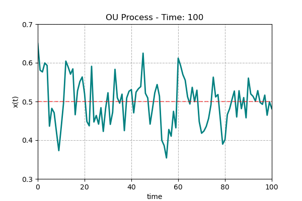

PS Odds Blog

2026. 03. 03.
2026 KBO Preseason Report - 결과편
시즌이 시작하기 전, 많은 전문가들이 포스트시즌 진출 팀을 예상하곤 합니다. 물론 제가 그런 걸 할 만한...

2026. 03. 18.
2026 KBO Preseason Report - 계산편
2026 KBO Preseason Report - 기술편, 아니 계산편에 오신 걸 환영합니다. 이 글은 제가 전에 결과편...